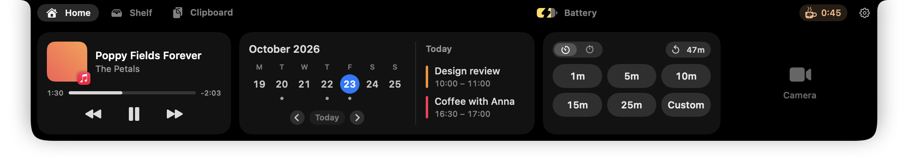
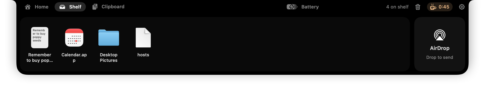
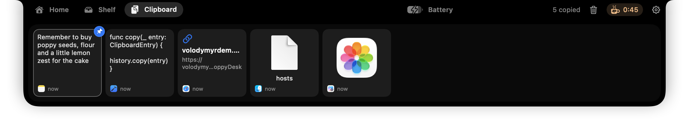
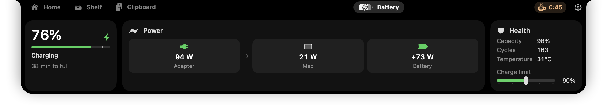
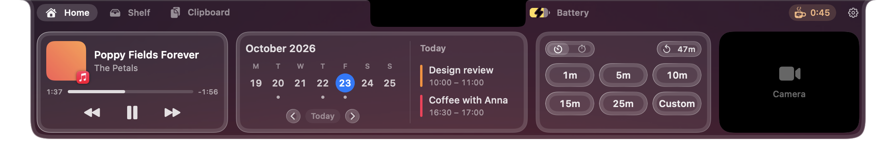
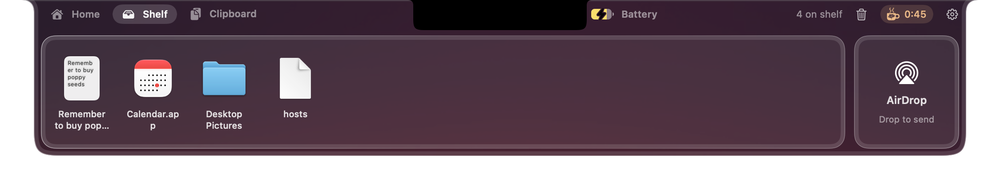
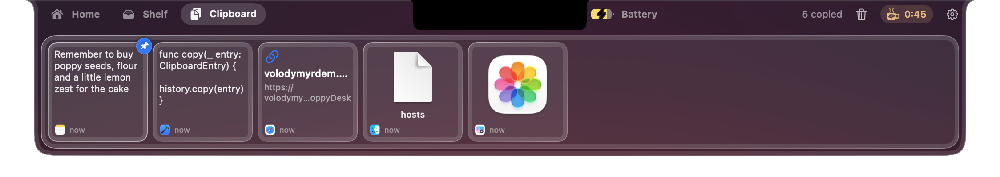
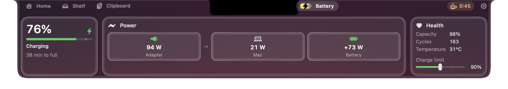
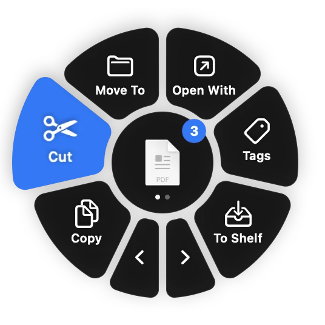
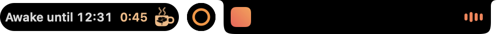

A shelf in the notch, a clipboard wheel, a tidy menu bar and a few small helpers. One free app; you turn on only the parts you want.
Download for Mac







Real PoppyDesk, rendered straight from the app. Point at the notch, try it in glass, or click the poppy in the menu bar.
Each one is a module. Turned off, it doesn't run and doesn't ask for anything.
Hover the notch and it opens into a dashboard: what's playing, your week, a timer and a stopwatch, a shelf for files and AirDrop.
Drag files or anything else, tap Control, and drop on Copy, Cut, Copy Path, AirDrop and more.
Everything you copy, a shortcut away, with search and pins, pasted right where you were.
Click the poppy to hide the icons left of its divider, and again to bring them back. Off until you turn it on.
How full it is and where the power goes, with a bubble by the notch showing the watts coming in.
Keeps the Mac from sleeping for as long as you like, with a little cup counting down by the notch or in the menu bar.
Every so often, a blinking eye reminds you to look at something far away for a few seconds.
Turn each app up, down or off, and pick where the sound goes, from the menu bar or the notch.
Every picture here is the real app, drawn by PoppyDesk itself.

Drag a few files, tap Control, and let go over what to do with them. Point at the wheel to try it; the arrows turn the page.

A cup with a poppy on it counts down beside the notch while your Mac stays up.
Plug in and the notch tells you how many watts are really coming in.
Install PoppyDesk once and switch modules on whenever you like, in Settings. Nothing to download again, nothing running that you didn't ask for.
No accounts, no analytics, no tracking. What you copy, play and plug in never leaves your Mac.
Read the privacy policy →PoppyDesk doesn't send anything about you or how you use it. There's no server to send it to.
A permission is asked for the first time you use what needs it, never for modules that are off.
The camera turns on only when you click it in the notch, and off when the notch closes. Nothing is recorded.
PoppyDesk isn't from the App Store yet, so a downloaded copy needs your OK once. Paste one line into Terminal and it's skipped.
curl -fsSL https://volodymyrdem.github.io/PoppyDesk/install.sh | bashDownloads the latest PoppyDesk from GitHub, puts it in Applications and opens it. See what it does.
Open PoppyDesk.dmg and drag PoppyDesk into Applications.
Open PoppyDesk from Applications. macOS says it can't check it; click Done.
Scroll to the bottom of Privacy & Security and click Open Anyway next to PoppyDesk.
Open Privacy & SecurityPick your modules. From then on PoppyDesk updates itself, no more asking.
Yes, every module.
Apps from outside the App Store need to be checked by Apple ("notarized") to open without a question. PoppyDesk isn't yet, so macOS asks you to confirm once, unless you install it from Terminal. Updates install without asking again.
PoppyDesk checks for a new version once a day and offers to install it in a click. Turn that off, or have updates install on their own, in Settings → About.
Yes. Macs without one get a black notch at the top of the screen that works the same way.
Only what the modules you turn on need, the first time you use them: Accessibility to paste and to tidy the menu bar, Calendar to show your events, the camera for the mirror in the notch, audio for the Sound mixer, and Finder to move files you cut. Each is explained before macOS asks.
Quit it from the poppy in the menu bar and drag PoppyDesk from Applications to the Trash.
Tell me on GitHub, or use Settings → About → Report a Problem in the app, which fills in your versions for you.